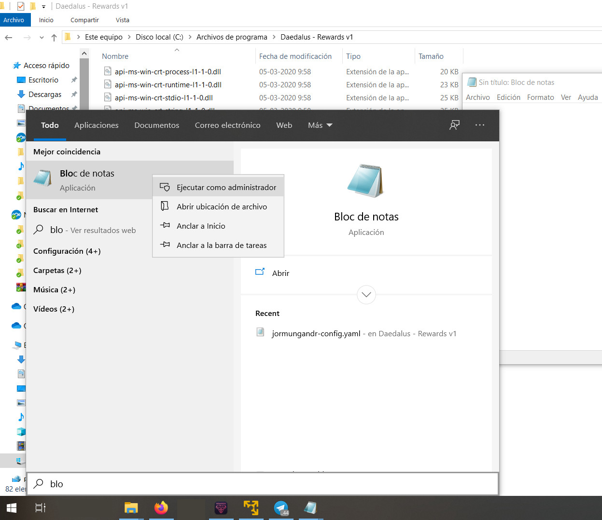
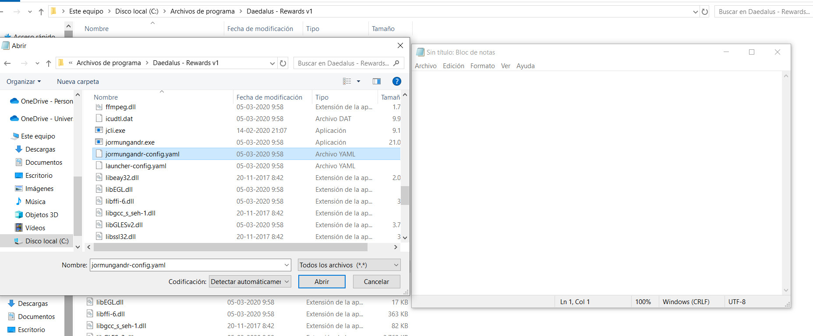
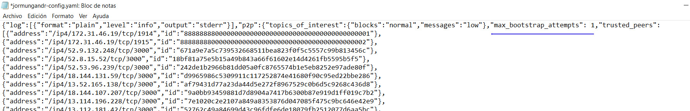
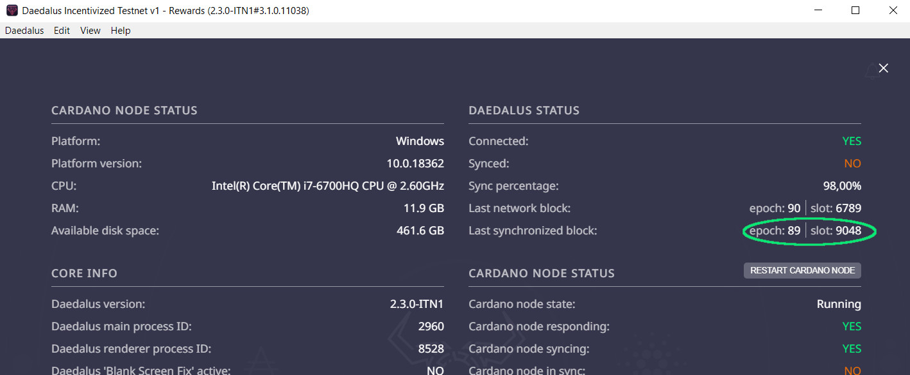

Iniciar Daedalus Tesnet con/sin trushed peer
En esta guía se enseña como disminuir los intentos de conexión con los trushed peer o sincronizar directamente con los nodos de la red .
A muchos nos ha pasado que cuando iniciamos la billetera Daedalus se nos queda pegado sincronizando infinitamente en la pantalla de carga, eso es debido a que aveces la billetera tiene problemas en conectar con los trushed peer oficiales, las causas de por que fallan los peer no se detallara aquí en el turorial.
En la última versión de Daedalus se incorpora el cliente jormungander 0.8.13 para gestionar la sincronización con la cadena de bloques de Cardano, es un cliente más estable, pero tiene un pequeño talón de Aquiles , que por defecto cuando no puede conectar con un trushed peer realiza intentos indefinidamente con la esperanza de conseguir concretar su conexión, por lo que si intenta conectar con algún peer que está mal funcionando se quedara reintentando indefinidamente hasta que él pueda descargar los datos, para estos casos podemos agregar una configuración a la billetera para que evite realizar estos reintentos o limitarlos a un intento por trushed peer, eso puede quedar a criterio de cada uno, en el caso de que no quieras realizar intentos de conexión con los trushed peer, la billetera comenzara a sincronizarse con los nodos disponibles en la red Cardano, es un proceso más lento pero es más efectivo.
Este tutorial está hecho para usuarios de Windows, pero la configuración es aplicable para usuarios de Linux u otros sistemas, solo deberás buscar el archivo de configuración en tu sistema correspondiente.
Primero debemos abrir el block de notas en modo administrador, busca el block de notas en tu barra de búsqueda y una vez sobre él haz CTRL+click derecho y te dará la opción para abrirlo en modo administrador.
Una vez abierto block de notas ve a "Archivo->Abrir" y ve a la dirección de instalación de tu billetera que en Windows es:
C:\Program Files\Daedalus - Rewards v1
Una vez ahí busca el archivo:
jormungandr-config.yaml
Procura tener seleccionado "Todos los archivos *.*" para que puedas verlo, ahora que lo tienes , ábrelo
Una vez abierto se mostraran varias instrucciones amontonadas en el block de notas pero no te preocupes puesto que el block de notas de Windows no sabe ordenar esos formatos en JSON, si lo abres desde una distribución Linux es probable que se vea todo ordenado, lo importante aquí es poner la configuración donde debe ir, así que agregaremos la configuración :
"max_bootstrap_attempts": 1
Dentro de la sección "p2p", en este tutorial lo hemos seteado en 1 , que significa que hará un intento de conexión por cada trushed peer de la lista (que aparece en el archivo de configuración) antes de pasar a sincronizarse con los otros nodos de la red. Deberás colocarlo en la misma posición que aparece en la imagen respetando sus comas.
Si deseas saltarte los trushed peer y sincronizar directamente con los nodos de la red, que igual es recomendable en los casos que ya tengas gran parte de la cadena de bloques sincronizada, los podemos setear a cero.
"max_bootstrap_attempts": 0
Hay que recordar que al sincronizarse directamente con los nodos es un poco más lento, pero cuando los trushed peer dan problemas es más efectivo.
Una vez seteada la configuración de tu preferencia (sea a 1 o a 0), se guardan los cambios y se abre la billetera Daedalus, Ahora solo queda esperar a que se cargue.
Si seteaste el "max_bootstrap_attempts" a 0, una vez que comienza a sincronizar, en la parte del diagnóstico puedes ver los "Last network block" y los "Last synchronized block", estos últimos puedes ver que de apoco se van actualizando hasta alcanzar el valor de los "Last network block".
Eso es todo, espero que este turorial les sea de ayuda y puedan abrir sus billeteras sin problemas de ahora en adelante.
Si deseas apoyarme para seguir creando mas contenido en español te invito a delegar en mi Pool